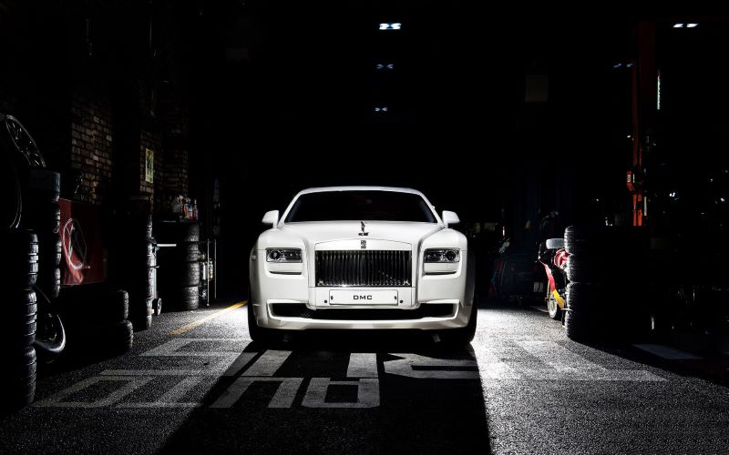
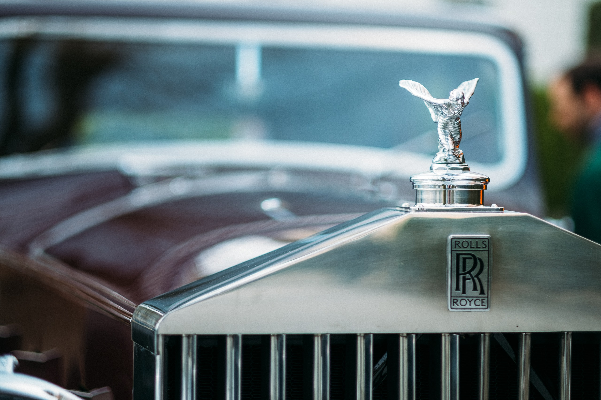
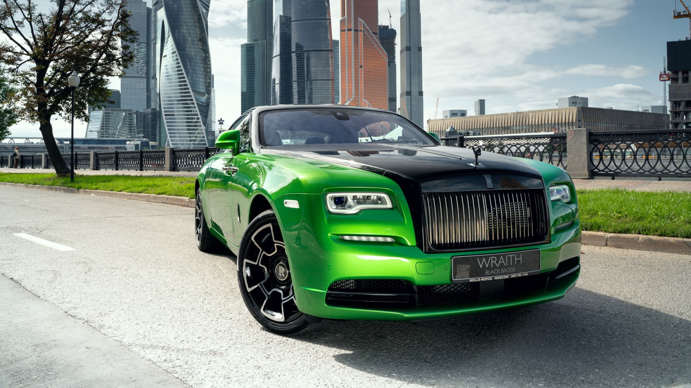

| Home |
Rolls-Royce World
The Rolls-Royce Phantom is a full-sized luxury saloon manufactured by Rolls-Royce Motor Cars. It is the eighth and current generation of the Rolls-Royce Phantom, debuting in 2017, and the second launched by Rolls-Royce under BMW ownership. It is offered in two wheelbase lengths.Phantom pricing starts at more than $450,000.
image:The Rolls-Royce Phantom
Rolls-Royce Ghost Features : Rolls-Royce has equipped it with a digital driver display, a 1300W audio system, a head-up display, an illuminated dashboard, and an infotainment system.$314,400

image:The Rolls-Royce Ghost
Rolls-Royce Cullinan is the brand's first SUV that redefines luxury and bespoke craftsmanship. It is audacious, luxuriously practical and is an overload of opulence. It is also a capable off-roader and continues to offer the 'magic carpet' ride quality that Rolls-Royce cars are known for.pricing starts at more than $327,750

image:The Rolls-Royce Cullian
Rolls-Royce wraith Has Supple ride, ultraluxurious interior, highly customizable. Lows Gas-guzzling powertrain, missing some driver-assistance tech, eye-popping price. Verdict Largely handmade and beautifully styled, the Rolls-Royce Wraith is the definition of a bespoke luxury coupe.pricing starts at more than $322,500

image:The Rolls-Royce Wraith
Rolls-Royce dawn Has a Beautifully designed body, exceptionally luxurious interior, totally customizable. Lows Inefficient engine, lacks driver-assistance tech, doesn't have a sporting bone in its body. Verdict With the top down, the Dawn is a perfect way to display your celebrity and wealth.pricing starts at more than $349,050

image:The Rolls-Royce Dawn
|